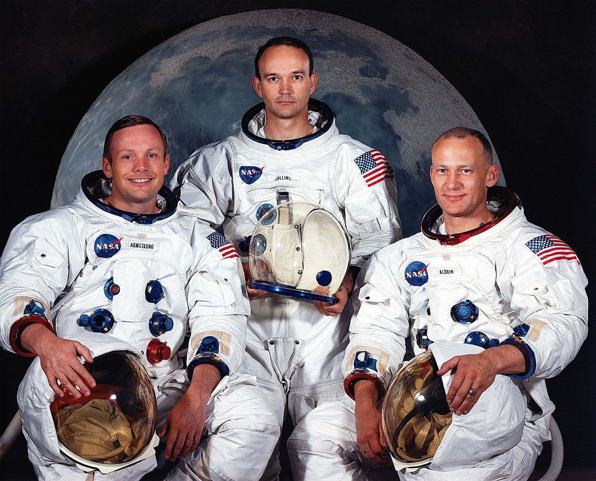
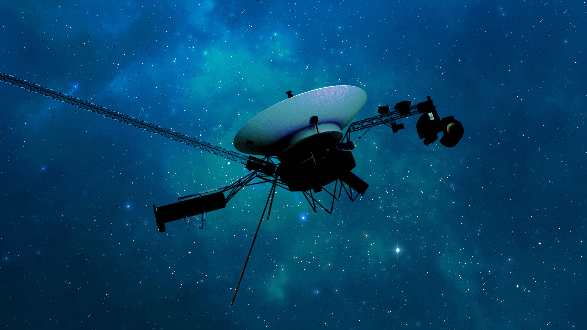
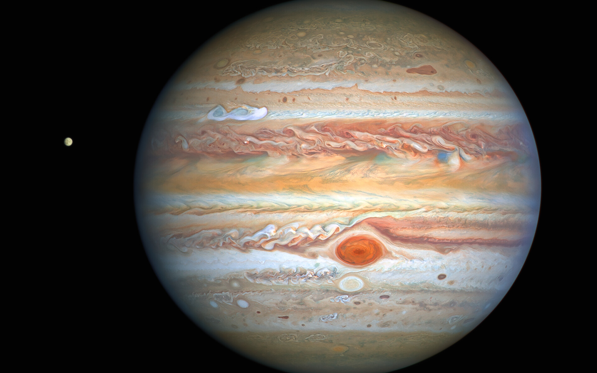
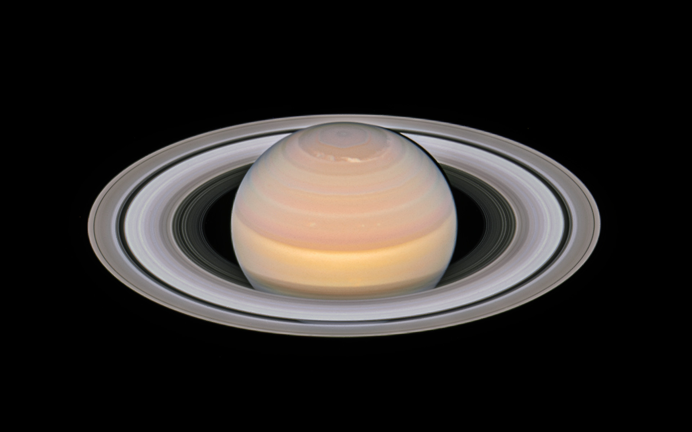
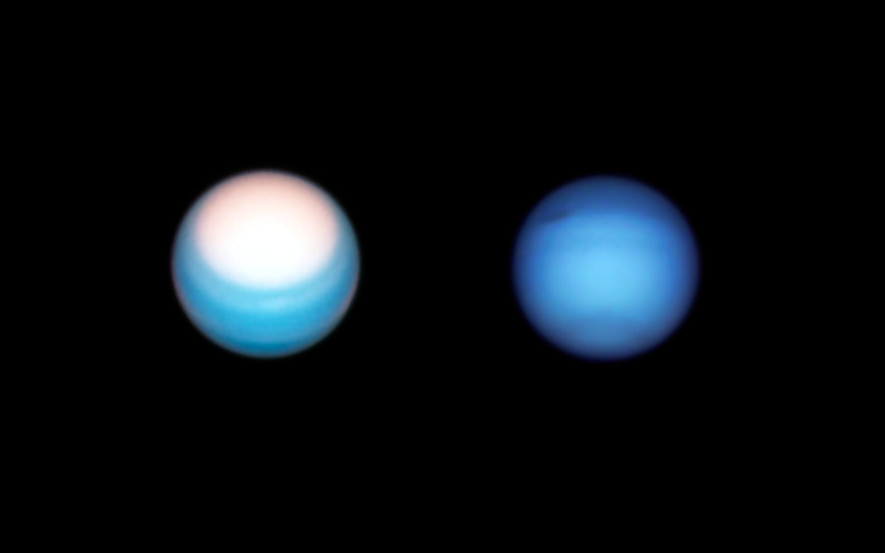
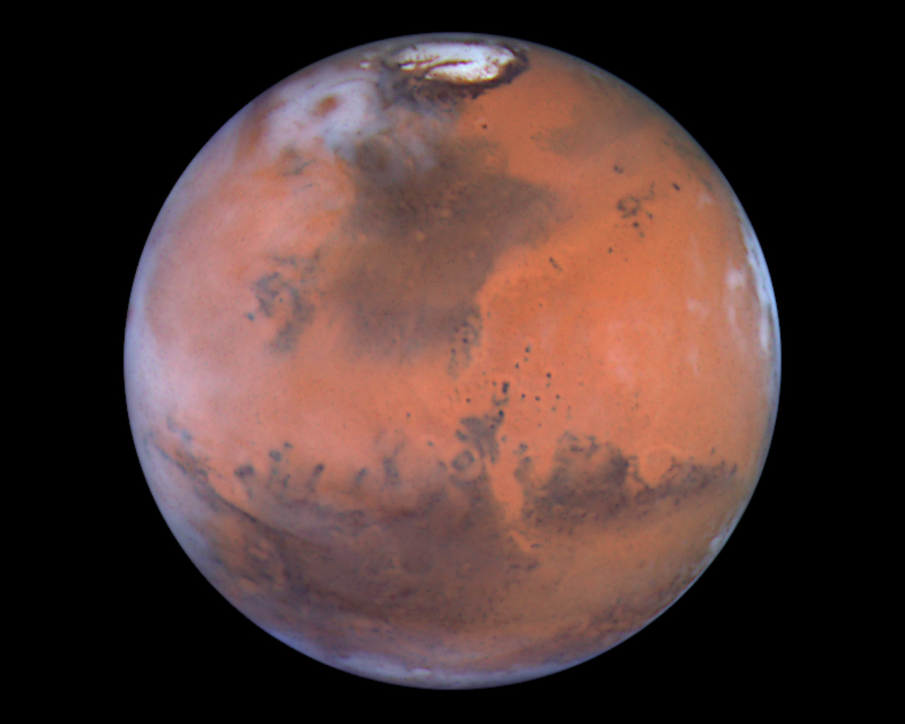
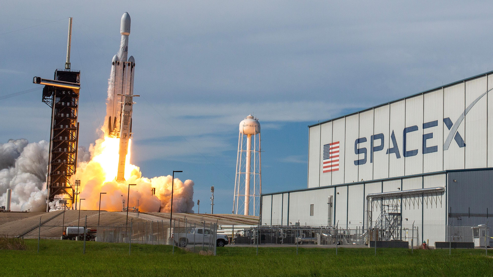
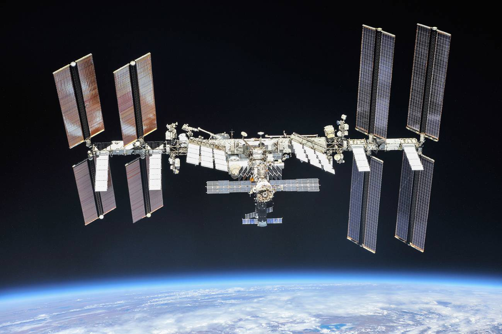

Historia:
La NASA, o National Aeronautics and Space Administration, nació el 29 de julio de 1958, en medio de la intensa rivalidad geopolítica y científica de la Guerra Fría. El exitoso lanzamiento del Sputnik por parte de la Unión Soviética un año antes supuso un gran reto para Estados Unidos, que vio la necesidad de crear una agencia gubernamental dedicada por completo a la investigación aeronáutica y la exploración espacial. Hasta ese entonces, el organismo responsable de la aviación y la investigación atmosférica era el National Advisory Committee for Aeronautics (NACA), cuyas labores se integraron en la nueva agencia.
Desde el principio, la NASA se propuso alcanzar hitos que parecían imposibles. A lo largo de la década de 1960, desarrolló programas pioneros como:
- Mercury (1958-1963): su meta fue poner al primer estadounidense en órbita y entender los efectos de la ingravidez en el cuerpo humano.
- Gemini (1965-1966): este programa probó maniobras cruciales para el posterior aterrizaje en la Luna, como las operaciones de encuentro y acoplamiento en órbita.
- Apolo (1961-1972): la gran culminación llegó en 1969, con la histórica misión Apolo 11, cuando Neil Armstrong y Buzz Aldrin se convirtieron en los primeros seres humanos en pisar la superficie lunar.
Tras los éxitos del programa Apolo, la NASA vivió un periodo de transición en el que se desarrolló el Transbordador Espacial (Space Shuttle), operativo entre 1981 y 2011. Este vehículo reutilizable realizó múltiples misiones y facilitó la construcción de la Estación Espacial Internacional (ISS), un laboratorio orbital en el que, gracias a la colaboración de varias potencias mundiales, se llevan a cabo experimentos científicos en condiciones de microgravedad.
En paralelo, la NASA ha liderado una gran variedad de misiones robóticas que han ampliado los límites de nuestro conocimiento del Sistema Solar. Sondas como Voyager 1 y 2 se convirtieron en los primeros objetos fabricados por el ser humano en viajar más allá de los planetas exteriores, revelando detalles de Júpiter, Saturno, Urano y Neptuno. Asimismo, programas como Mariner, Viking o Pioneer sentaron las bases para la exploración de Venus y Marte, permitiéndonos verlos con un detalle nunca antes alcanzado.




En Marte, específicamente, se ha logrado un hito tras otro gracias a los Mars Rovers: Spirit, Opportunity, Curiosity y, más recientemente, Perseverance. Estos vehículos robóticos han enviado imágenes y datos que confirman que el planeta rojo tuvo condiciones habitables en un pasado remoto, despertando la curiosidad sobre su potencial para albergar vida microbiana.
A nivel astronómico, la NASA también ha revolucionado nuestra visión del cosmos. Proyectos como el Telescopio Espacial Hubble (lanzado en 1990) han permitido observar galaxias, nebulosas y estrellas con un detalle extraordinario, ayudando a refinar la edad estimada del universo y a estudiar fenómenos como la expansión cósmica, la materia oscura y la energía oscura.

Marte al futuro:
De cara a las próximas décadas, la NASA diseña y lidera nuevas y audaces misiones, algunas de ellas en estrecha colaboración con otras agencias espaciales y entidades privadas:
- Plan enfocado en regresar a la Luna de forma sostenible, estableciendo eventualmente bases lunares permanentes o semipermanentes.
- Servirá como paso previo para la exploración tripulada de Marte.
Programa Artemisa
- Una plataforma orbital ubicada en la órbita de la Luna que actuaría como “puerto” para transferir astronautas y equipos a la superficie lunar y, más adelante, a otros destinos como Marte.
- Fomentará la colaboración internacional al igual que la ISS, pero con un enfoque especial en la exploración de más largo alcance.
Estación Gateway
- Con el lanzamiento del Telescopio Espacial James Webb y futuros observatorios espaciales, se apunta a investigar la atmósfera de planetas fuera del Sistema Solar para detectar compuestos relacionados con la vida.
- También se profundizará en el estudio de las primeras galaxias y estrellas formadas tras el Big Bang.
Exoplanetas y Búsqueda de Vida
- La NASA, en conjunto con empresas privadas como SpaceX y Blue Origin, impulsa el desarrollo de cohetes y naves espaciales comerciales.
- Este nuevo modelo de colaboración público-privada podría abaratar los costes de los viajes espaciales y abrir la puerta a más misiones de ciencia y exploración.
Innovación Tecnológica y Economía Espacial

- El monitoreo de asteroides cercanos a la Tierra es una prioridad para garantizar la seguridad del planeta.
- Misiones como DART (Double Asteroid Redirection Test) han demostrado la capacidad de alterar ligeramente la trayectoria de asteroides potencialmente peligrosos.
Defensa Planetaria y Estudios de Asteroides
A lo largo de su historia, la NASA ha pasado de ser un proyecto nacional con fines militares y propagandísticos a convertirse en una institución global de investigación científica y tecnológica. Su relevancia radica no solo en los avances astronómicos y en la exploración espacial, sino también en los beneficios que llegan a la vida cotidiana: sistemas de posicionamiento global, comunicaciones satelitales, pronósticos meteorológicos más certeros y tecnología médica, entre muchos otros.
En síntesis, la agencia continúa expandiendo los horizontes del ser humano, con la convicción de que la exploración espacial es un esfuerzo que trasciende fronteras. Desde los primeros pasos en la Luna hasta las misiones más ambiciosas a Marte, la NASA representa el espíritu de la curiosidad y la determinación, impulsando a la humanidad hacia un futuro en el que conoceremos cada vez más sobre el universo y nuestro lugar en él.
En las siguientes páginas profundizaremos en los hitos y misiones más relevantes de la NASA, así como en los telescopios espaciales Hubble y James Webb, que han cambiado nuestra forma de ver el cosmos. ¡Te invitamos a explorar este fascinante viaje de descubrimientos!
